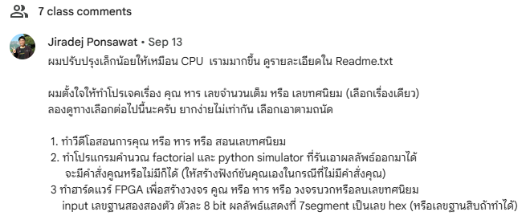
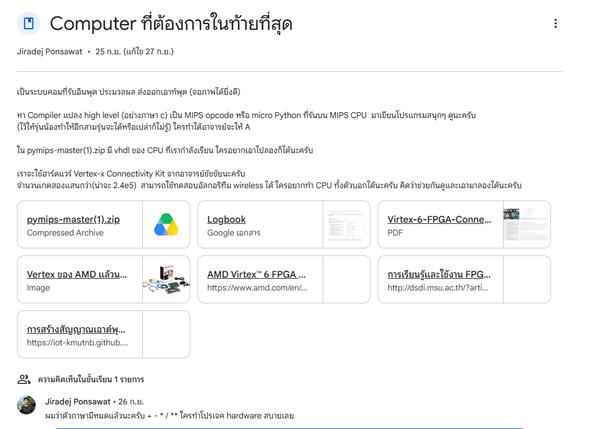

FPGA STUDIO
DUAL 32-BIT RISC EDA & COMPILATION STUDIO
อาจารย์ท้า... ใครทำได้จะให้เกรด A

- 1. ทำวิดีโอสอนคูณ / หาร / ทศนิยม
- 2. โปรแกรมคำนวณ Factorial + Python Simulator
- 3. ทำฮาร์ดแวร์ FPGA วงจรคูณหาร ออก 7-Segment เลขฐานสิบ

“หา Compiler แปลง high level (อย่างภาษา C) เป็น MIPS opcode หรือ micro Python ที่รันบน MIPS CPU... (ไว้ให้รุ่นน้องทำให้อีกสามรุ่นจะได้หรือเปล่าไม่รู้ ใครทำได้อาจารย์จะให้ A)”
เราไม่ได้แค่หาคอมไพเลอร์... แต่เราสร้าง IDE ทั้งระบบ!
ถ้าแค่หา Compiler มาตัวเดียว มันยังใช้งานยากและไม่เห็นภาพ เราเลยสร้างสภาพแวดล้อมที่ครบวงจร
REAL GCC BUNDLED
มี Real MIPS GCC 12.2 และ RISC-V GCC 15.2 ในตัว ไม่ใช่ตัวแปลงเทียม รองรับ C / C++ / Python / ASM
VIRTUAL NEXYS A7
จำลองบอร์ดจริง 16 Switches, 16 LEDs, 8-Digit 7-Seg, UART Console, และหน้าจอ VGA 640x480
CUSTOM CPU IMPORT
สามารถนำเข้าไฟล์ Verilog/VHDL ของใครก็ได้ มีตัวสแกนพอร์ตอัตโนมัติแล้วต่อเข้าบอร์ดเสมือนได้ทันที
ZERO-VIVADO FLOW
สังเคราะห์ Bitstream ในเครื่องผ่าน WSL (Yosys) และแฟลชลง FPGA จริงได้ใน 1 วินาที ไม่ต้องลงโปรแกรม 80GB
เส้นทางภาษา C สู่ท่อส่งคำสั่งในชิป FPGA
C / C++ Code
main.c (nCk / Fibo)
Real MIPS GCC
-march=mips32 -EB
Linker link.ld
SP = 0x80010000
BRAM Split
.text(0x0) .data(0x80M)
5-Stage Pipeline
IF-ID-EX-MEM-WB
มีโค้ด start.S วางอยู่ที่ Vector 0x00000000 ทำหน้าที่ตั้งค่า Stack Pointer ไปที่จุดสูงสุดของ RAM (0x80010000) แล้วกระโดดเรียกฟังก์ชัน main() ของภาษา C ทันที
ใช้ objcopy สกัดเฉพาะ Section .data (ตัวแปร Global / Static / Constants) แปลงเป็นเวิร์ด 32 บิต บรรจุใส่ BRAM ที่ 0x80000000 อัตโนมัติ ทำให้รันโค้ดภาษา C ได้สมบูรณ์ 100%
Memory-Mapped I/O // ที่อยู่สั่งงานฮาร์ดแวร์จริง
CPU คุยกับโลกภายนอกผ่านตำแหน่ง Address Space ตามมาตรฐานของบอร์ด Digilent Nexys A7:
16 User LEDs
ควบคุมไฟ LED 16 ดวงบนบอร์ด (`LED = 0xFF;`)
16 Slide Switches
อ่านสถานะสวิตช์ 16 ตัว (`val = SWITCH;`)
8-Digit 7-Segment
ส่งเลขฐานสิบ/Hex ไปแสดงผลบนหน้าปัด 8 หลัก
5 Pushbuttons
อ่านปุ่มกด 5 ทิศทาง (BTNC, BTNU, BTNL...)
UART Console TX/RX
พอร์ตอนุกรม 115200 8N1 สำหรับทำ `printf()`
VGA Framebuffer
หน้าจอภาพความละเอียด 640x480 พิกเซล
สาธิตการรันจริง: คำนวณคณิตศาสตร์ & ฮาร์ดแวร์ I/O
คำนวณ nCk ออก 7-Segment
รันโค้ดภาษา C คำนวณสูตรคอมบิเนชัน 10 C 3 = 120 ผ่านตัวคูณฮาร์ดแวร์ วิ่งผ่าน 5-Stage Pipeline แสดงผลออกหลอด 7-Segment เป็นเลขฐานสิบสมบูรณ์แบบ
InterSwitches & UART
คลิกสับสวิตช์บนจอ ไฟ LED ติดตามบิตจริงทันที และรันคำสั่ง printf("Hello World\n") ตัวอักษรวิ่งออกหน้าต่างคอนโซลแบบสดๆ
> Hello World from MIPS CPU!
1-Sec Live Board Flashing
โชว์การกดปุ่ม Upload to Board ส่งไบนารีผ่านสาย Micro-USB เข้า Block RAM บนบอร์ด Nexys A7 จริง โดยไม่ต้องเสียเวลารัน Vivado 15 นาที
ขุมพลังระดับลึกของ FPGA STUDIO
Custom CPU & Compiler Import
ใครเขียน CPU Verilog/VHDL มา สามารถโยนไฟล์เข้าโปรแกรมได้เลย ระบบมี HDL AST Parser ตรวจจับพอร์ต Clock, Reset, Memory Bus อัตโนมัติ และสร้างหน้าต่าง Pin Binding แม็ปเข้าบอร์ดเสมือนให้ทันที!
รองรับทั้ง OpenMIPS และ RISC-V
ไม่ได้มีแค่ MIPS แต่เราใส่คอร์สถาปัตยกรรมยุคใหม่อย่าง **RISC-V (RV32IM)** พร้อมคอมไพเลอร์ GCC 15.2 มาให้ในตัว สามารถเขียนโค้ดภาษา C เดียวกันแล้วสลับเปรียบเทียบผลลัพธ์ของทั้ง 2 คอร์ได้ทันที
วงจรหาร 32 ไซเคิล (3.51 $\rightarrow$ 28.88 MHz)
แก้ปัญหา Timing ระดับฮาร์ดแวร์ โดยแทนที่วงจรหารแบบทางเดินเดี่ยวด้วยโมดูล div.v แบบ Multi-Cycle Restoring Divider ทำให้ความถี่พุ่งเกินเกณฑ์ 25 MHz ของ Nexys A7 ฉลุย
สังเคราะห์ Bitstream ในเครื่องผ่าน WSL
เชื่อมต่อ **Yosys + nextpnr-xilinx** สังเคราะห์โค้ด Verilog กลายเป็นไฟล์ .bit ได้ในเครื่องตัวเองแบบออฟไลน์ 100% โดยไม่ต้องพึ่งพา Vivado ขนาด 80GB
ตอบโจทย์อาจารย์ครบทุกข้อ... ส่งต่อให้รุ่นน้องใช้งานจริง
โปรเจกต์นี้ไม่ได้ทำเพื่อส่งแล้วจบ แต่ถูกสร้างขึ้นเป็นซอฟต์แวร์ที่พร้อมใช้งานจริงสำหรับภาควิชา
Installer 599 MB
ไฟล์ติดตั้งขนาดกะทัดรัด แตกไฟล์ GCC ทั้ง MIPS และ RISC-V พร้อม Bitstream ครบชุด ออฟไลน์ 100%
GitHub Repository
github.com/posweeza558/fpga-studio
พร้อมคู่มือสถาปัตยกรรม 10 หัวข้อเชิงลึก
รุ่นน้องไม่ต้องรอ 3 รุ่น!
รุ่นน้องปีหน้าสามารถดาวน์โหลดโปรแกรมนี้ไปใช้เรียนวิชา Microprocessor ได้ทันทีตั้งแต่วันนี้